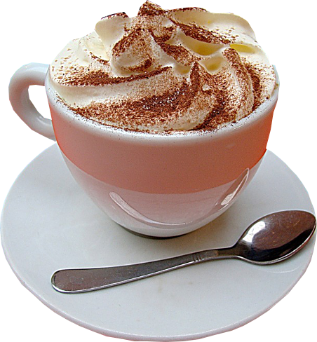
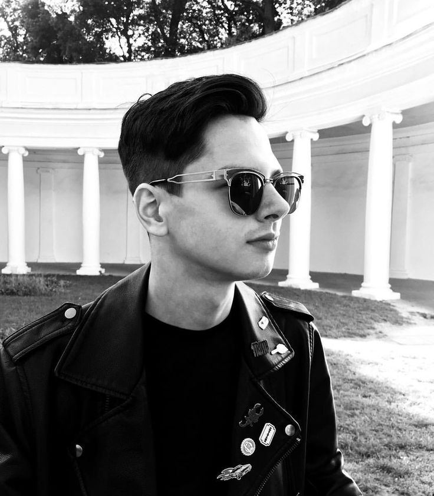
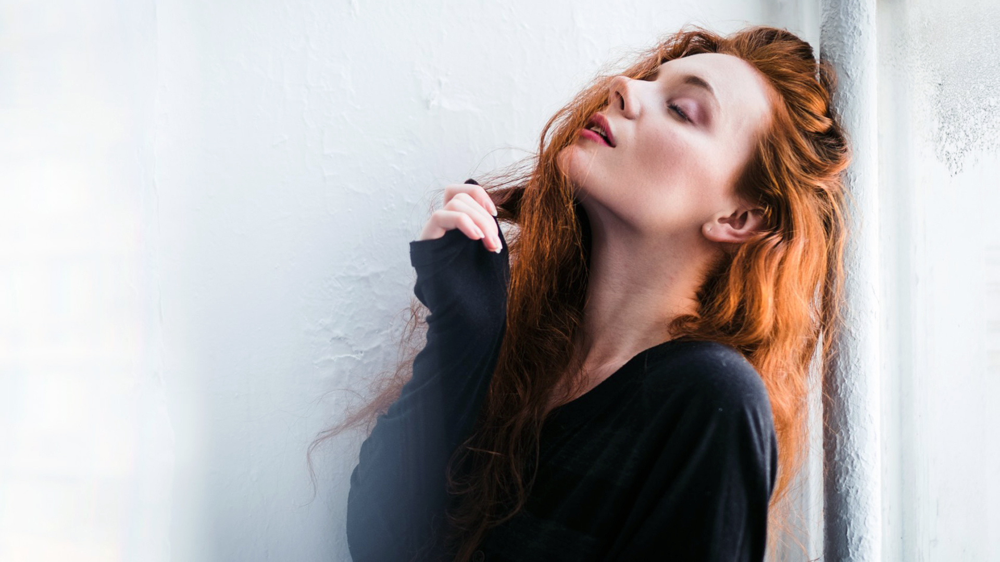
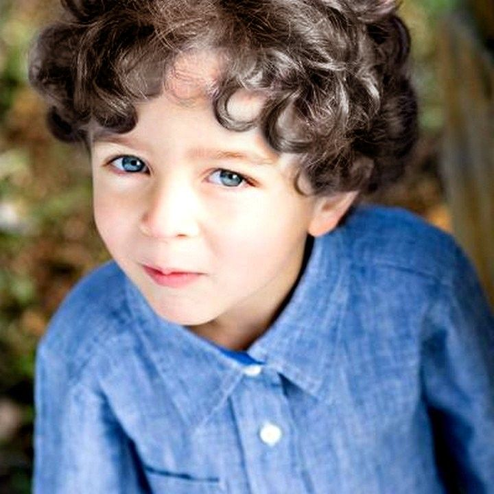

"Кафе...Любовь...Стоп"
Фанфик: всё о нём от начала и до финала
| Главная | Персонажи | О авторе | Описание фанфика |
|---|
 Мередит.
Главная героиня этого произведения.
Мередит.
Главная героиня этого произведения. Костя-необычный и яркий артист, к тому же ещё и певец.
Костя-необычный и яркий артист, к тому же ещё и певец.
Именно по его фандому написан фанфик. В самаом начале к главной героине чувствует отвращение и неприязнь. И нет,это не из-за её внешности, которая кстати немного хватает артиста. А из-за того злощастного интервью...
 Артём. Директор Кости.
Но в будущем может быть не только им. Довольно часто появляется в тексте. И постоянно играет роль защитника либо же поучателя. Ведь , что Мередит, что Костя иногда ведут себя безбашенно, не думая о последствиях своих действий.
 Анна.Сестра Мередит.
С нами с самой первой части, но это фото показывает нам ёё уже в зрелом возрасте. Очень настойчивая и отчасти вредная, собственно как все младшие сёстры
 Никита. Ребёнок Мередит и Кости.
Именно вокруг него проворачивается почти вся третья часть фанфика.
Женя.Приёмный ребенок уже Артёма и Мередит.
Почему? А вы прочтите все три часть и поймёте!
Ксюша.Является другом Жени.
Но как многе считают- дружбы между парнем и девушкой не существует. Так ли тут?
Сайт о фанфике с сайта "Фикбук" не предназначен для всеобщего обозрения.
Сделала Анна Любченко